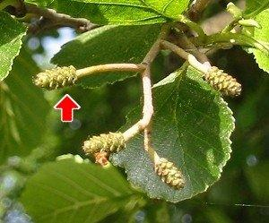
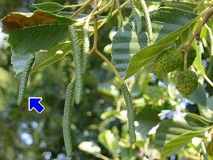

|
| Die Schwarzerle blüht von Februar bis April.
Die weiblichen Blütenstände sehen wie kleine Zapfen aus.
 |  Die männlichen Blütenstände sind länglich. Sie werden Kätzchen genannt.
Die Blüten werden schon im Sommer zuvor angelegt. Sie werden vom Wind bestäubt. |